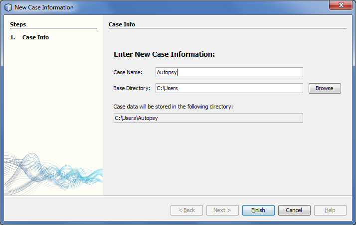

There are several ways to create a new case:
The "New Case" wizard dialog will open and you will need to enter the case name and base directory. Each case will have its own directory and the path of the directory is created by combining the "base directory" with the "case name". If the directory already exists, you will need to either delete the existing directory or choose a different combination of names.
Here's an example of the "New Case" wizard dialog:
